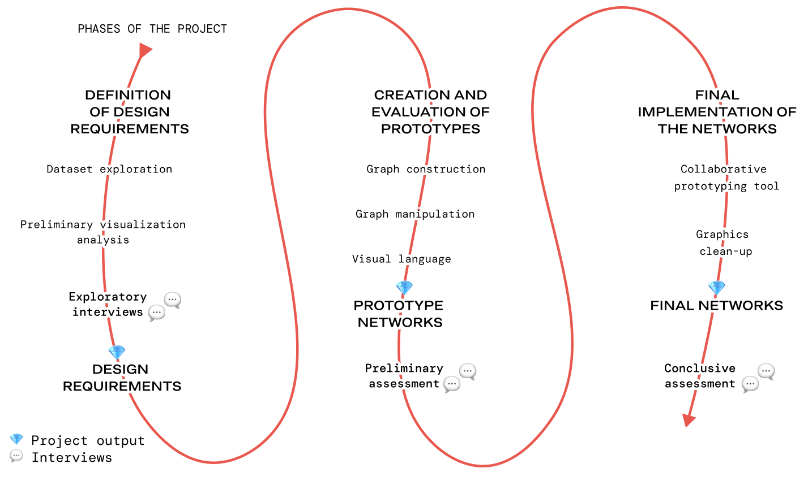
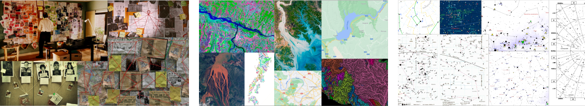
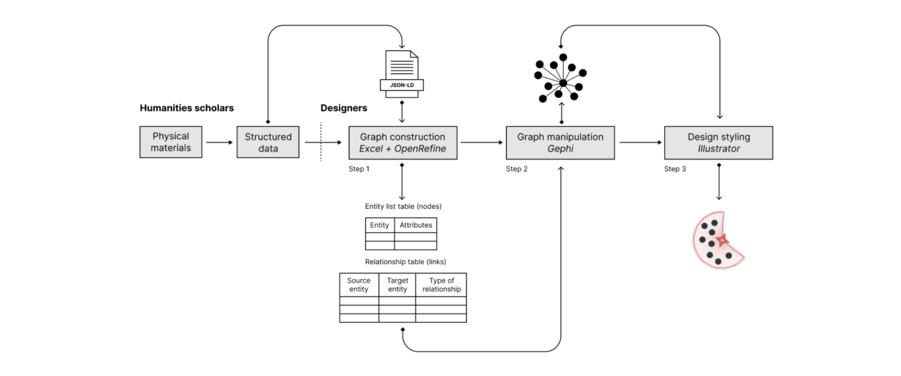

Genetic networks:
data model and visualisations
DH2023. Graz, 14 July 2023

https://roud.unil.ch
Example of manuscript description
Exemple.
https://roud.unil.ch/archive


Data modelled according to GENO 0.2: https://github.com/gustaveroudproject/geneticNetworksDataViz



Thanks for your attention
- The edition of the complete works of Gustave Roud
- Visualising genetic networks
- GENO, the Genetic Networks Ontology
1. The edition of the complete works of Gustave Roud

|
Gustave Roud (1897-1976)
Œuvres complètes Swiss National Science Foundation project - University of Lausanne, 2017-2021 Dir. by Claire Jaquier and Daniel Maggetti Team: Alessio Christen, Bruno Pellegrino, Elena Spadini, Julien Burri, Raphaëlle Lacord |
- title
- archive
- shelfmark
- editorial set
- type of document (manuscript, typescript, print)
- with annotations
- support (sheets, agenda, carnet, cahier, bloc-notes, enveloppe)
- writing tool
- writing color
- date or established date
- genetic stage (note, plan, list, draft, clear copy, final manuscript, proofs, corrected printout)
- genetic dossier, bibliographical reference
Three ways to compose his texts
- A. Classical genesis: text and avant-textes
- B. From the diary: diary entries, genetic materials a posteriori
- C. Genesis from previously published texts: reuse and continuation, post-editorial or epi-genesis
Exemple.
Air de la solitude
2. Visualising genetic networks
Les manuscrits de Madame Bovary. Tableau génétique des brouillons
Friedrich Dürrenmatt, Das Stoffe-Project. Einzelblatt-Stemma Der Tod des Sokrates
Friedrich Dürrenmatt, Das Stoffe-Project. Einzelblatt-Stemma Der Tod des Sokrates
“ Ce qui est sans doute à retenir de cette experience [avec le logiciel Storyspace] [...] c'est la nécessité de nommer les liens et de prévoir des carrefours de liens „
Daniel Ferrer, « La représentation hypertextuelle des manuscrits. Quelques leçons de douze années d'expériences », L'Edition du manuscrit. De l'archive de création au scriptorium numérique, éd. A. Crasson, 2008
To do something more, we need a fundamental shift away from the text-as-document
paradigm toward what Zundert and Robinson refer to as the text-as-work paradigm,
or what I will refer to as the text-as-network paradigm.
For those familiar with the history of the web, Tim Berners-Lee, and the recent advance of Linked Open Data, some of this critique should feel familiar
For those familiar with the history of the web, Tim Berners-Lee, and the recent advance of Linked Open Data, some of this critique should feel familiar
Witt, Jeffrey C. 2018. “Digital Scholarly Editions and API Consuming Application.” In Digital Scholarly Editions as Interfaces.
Elli, Tommaso, Andrea Benedetti, Valentina Pallacci, Elena Spadini, and Michele Mauri. 2023. “Designing Network Visualizations for Genetic Literary Criticism.” Convergences - Journal of Research and Arts Education 16 (31): 25–38.
Elli, Tommaso, Andrea Benedetti, Valentina Pallacci, Elena Spadini, and Michele Mauri. 2023. “Designing Network Visualizations for Genetic Literary Criticism.” Convergences - Journal of Research and Arts Education 16 (31): 25–38.
https://archive.ph/7N3gT + https://observablehq.com/@densitydesign/snodaroud
3. GENO
GENO
OWL2 Ontology for Genetic Criticism and Editing
Elena Spadini, "Genetic Networks: Data Model and Visualisations", Presentation. DH2023 'Collaboration as Opportunity', Graz, 2023.